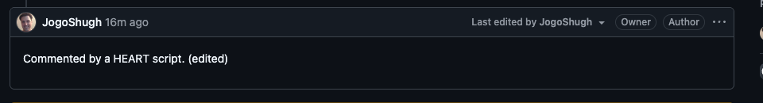
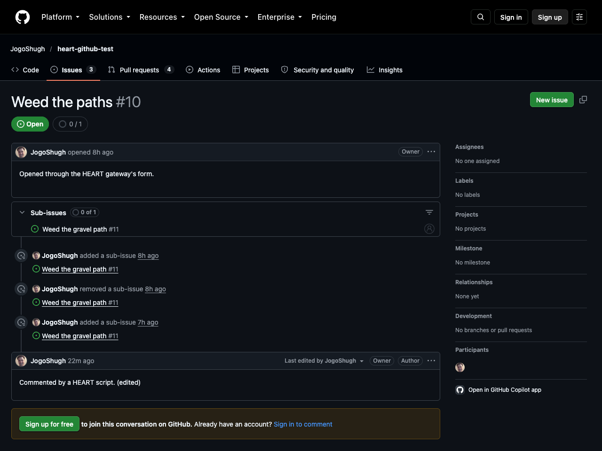

A twenty-line Kotlin script knew one address. It read a GitHub issue, commented on it, edited the comment, checked the result, and found out that reopening wasn't on offer, all against real GitHub. Every other address it used, GitHub's server handed it.
client/scripts/tests/github-comment.kts, exactly as it ran. There are no URLs past the first line inside heart(…), and no HTTP methods or status codes anywhere.
// Comment on an open issue through the HEART gateway for GitHub, edit the comment, and show that
// reopening an open issue is not offered. Writes only to the repository it is given.
// artie run tests/github-comment.kts owner=JogoShugh repo=heart-github-test number=10
val owner by input()
val repo by input()
val number by input()
val body by input(default = "Commented by a HEART script.")
heart("http://localhost:8392/") {
act("github:issues-get", "owner" to owner, "repo" to repo, "issue_number" to number.toInt())
check(state["/state"] == "open") { "the issue should be open" }
expect(NewResource) {
act("github:comment", "body" to body) {
act("github:edit", "body" to "$body (edited)")
check(state["/body"] == "$body (edited)") { "the comment should be edited" }
}
}
expect(NotOffered) { act("github:reopen") }
}Run with the installed command. ARTIE was the client, found on the classpath, and talked to the HEART gateway on port 8392, which spoke to api.github.com with the caller's own token.
$ artie run tests/github-comment.kts owner=JogoShugh repo=heart-github-test number=10
1 enter http://localhost:8392/: done
2 act github:issues-get, owner JogoShugh, repo heart-github-test, issue_number 10: done
3 check: held
4 act github:comment, body Commented by a HEART script.: new resource
5 act github:edit, body Commented by a HEART script. (edited): done
6 check: held
7 return to http://localhost:8392/repos/JogoShugh/heart-github-test/issues/10: done
8 act github:reopen: refused
finished, 8 steps
exit 0| # | Step | Took | What the client then held |
|---|---|---|---|
| 1 | Enter the bookmark | 62 ms | The gateway's home: 6 forms |
| 2 | Read the issue, from the home's github:issues-get form | 973 ms | Issue #10, open: 13 forms |
| 4 | Comment, from the issue's github:comment form | 3,051 ms | The new comment, at the address GitHub gave it (expected: new resource) |
| 5 | Edit, from the comment's own github:edit form | 2,572 ms | The comment, edited |
| 7 | Back to the issue the block started on, read again | 562 ms | Issue #10: 13 forms |
| 8 | github:reopen | 0 ms | Refused by the client, before sending anything: “The issue is already open.” (expected: not offered) |
Screenshots of github.com, taken right after the run, signed out (the repository is public).


In 2008 Roy Fielding wrote “REST APIs must be hypertext-driven”, aimed squarely at HTTP APIs that called themselves REST. A few of its rules, and where they turn up in this script:
A REST API should be entered with no prior knowledge beyond the initial URI (bookmark) and set of standardized media types that are appropriate for the intended audience.On entry: the bookmark
That is heart("http://localhost:8392/"), the only address in the script. The issue's address came from a form on the home resource. The comment's address came from GitHub, in the answer to the act that brought it into being. The way back to the issue was an address the client already held.
A REST API should never have “typed” resources that are significant to the client. … The only types that are significant to a client are the current representation's media type and standardized relation names.On types: relations and media types, not resource types
The script never says “this is an Issue object” or “this is a Comment object”. It says relation names: github:issues-get, github:comment, github:edit, github:reopen. What it then holds is a representation: state it can read by JSON Pointer (state["/body"]), and whatever forms and links come with it. The github: names are defined by the gateway's profile, a vocabulary the server publishes. They are not addresses.
From that point on, all application state transitions must be driven by client selection of server-provided choices that are present in the received representations or implied by the user's manipulation of those representations.On entry, continued: hypermedia drives state
Every act selects a form the server offered in the representation the client holds. If the form isn't there, the script doesn't guess. Step 8 is the proof. Issue #10 is open, so the server didn't offer github:reopen, and ARTIE refused it from the manifest in 0 ms, without sending a request, quoting the server's own reason: “The issue is already open.”
A REST API should spend almost all of its descriptive effort in defining the media type(s) used for representing resources and driving application state …On description: media types, not URIs
HEART is that effort: a media type with forms, a manifest of what is offered now and why the rest isn't, and a binding-neutral meaning for “done”, “new resource” and each kind of refusal. The script's outcomes come from it. expect(NewResource) means a new resource came into being, whatever protocol carried it. expect(NotOffered) means the act wasn't among the server's choices.
GitHub calls its API REST. To do these four things with GitHub's own API, a client is written against GitHub's documentation:
| To | GitHub's documented request | This script |
|---|---|---|
| Read the issue | GET /repos/{owner}/{repo}/issues/{issue_number} | act("github:issues-get", …) |
| Comment | POST /repos/{owner}/{repo}/issues/{issue_number}/comments | act("github:comment", …) |
| Edit the comment | PATCH /repos/{owner}/{repo}/issues/comments/{comment_id} | act("github:edit", …), on the comment it holds |
| Reopen | PATCH /repos/{owner}/{repo}/issues/{issue_number} with "state": "open", whether or not that makes sense right now | Not offered while the issue is open, with the reason |
That is four URI templates and three HTTP methods compiled into the client, plus one identifier (comment_id) the client has to fish out of a response and splice into the next template. That is exactly the out-of-band knowledge Fielding's post objects to. The HEART client holds none of it. If GitHub moved comments to a new path tomorrow, the gateway's representations would carry the new addresses, and this script would run unchanged.
Gloating, a bit. An eighteen-year-old blog post that most of the industry filed under “purist” now runs as working code, against one of the most-used APIs there is, through a gateway that GitHub doesn't know exists. GitHub didn't have to change anything. The hypertext was always one translation layer away.
The script is ordinary Kotlin, compiled and run as a script (.kts). It reads like a language of its own because of five Kotlin features:
When a function's last parameter is a function, the braces can follow the call. heart("…") { … } is a call to heart(entry, block), with the block written outside the parentheses.
block: Here.() -> Unit runs the block as if inside a Here, the representation the script holds. So act, check and state need no prefix. A nested block gets a new Here: inside act("github:comment") { … }, state is the comment's.
"body" to body is "body".to(body), which makes a Pair. Fields read as name and value with no map-building syntax.
val owner by input() hands the property to a delegate. Declaring it registers the input, so the runner knows what the script needs before its first request, and artie run --inputs-of can list them. Reading it supplies the value: given, defaulted, or asked of a person (only with --interactive).
@DslMarker)Inside a nested block, Kotlin won't let the script call act on an outer Here by accident. A selection is always made on the representation the client holds now, never on a stale one.
expect isn't part of the DSL. It is an extension function on Here in heart-script-test. Everyday scripts never see it, and test scripts import it.
issue_number, body). Fielding allows that: it is the vocabulary of the media type and profile. It is knowledge of meaning, not of addresses.number.toInt(): inputs arrive as text. A typed layer on top of the DSL, still at the ideas stage, would remove that.Navigator interface runs the same script.Every step, its outcome and what the client held, as a run report: GitHub Comment, Scripted.